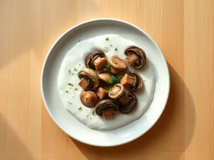
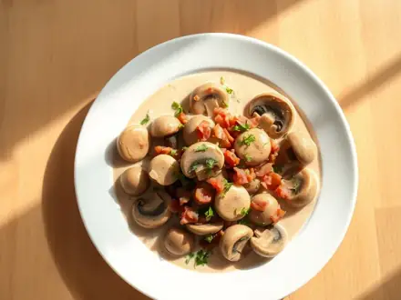
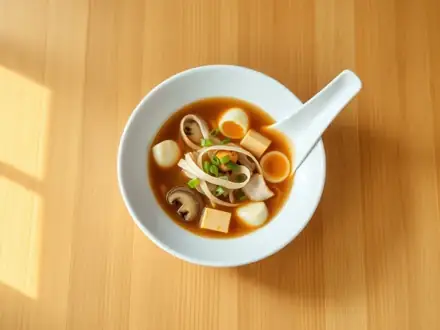
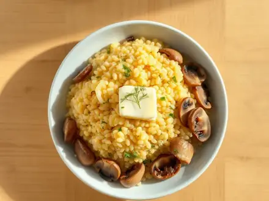
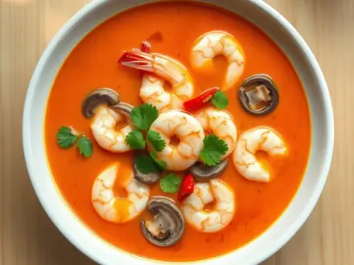
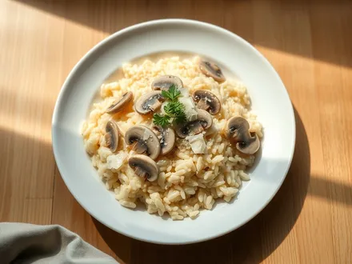
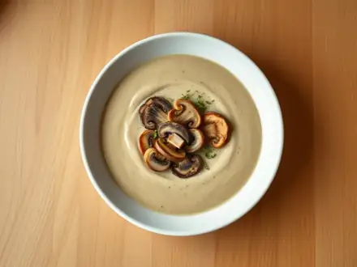

Что приготовить из грибов
Шампиньоны и лесные грибы: супы, жаркое, паста. 45 рецептов: у каждого время, калории и БЖУ на порцию, пошаговые инструкции и список покупок
 Жареные грибы с яйцом и луком15 мин · 370 ккал · Б 23 г · Второе блюдо
Жареные грибы с яйцом и луком15 мин · 370 ккал · Б 23 г · Второе блюдо Омлет с грибами и сыром20 мин · 394 ккал · Б 26 г · Второе блюдо
Омлет с грибами и сыром20 мин · 394 ккал · Б 26 г · Второе блюдо Брокколи с шампиньонами в соевом соусе20 мин · 297 ккал · Б 14 г · Второе блюдо
Брокколи с шампиньонами в соевом соусе20 мин · 297 ккал · Б 14 г · Второе блюдо
Шампиньоны в сметане с луком20 мин · 439 ккал · Б 14 г · Второе блюдо Фасоль, тушённая с грибами25 мин · 431 ккал · Б 22 г · Второе блюдо
Фасоль, тушённая с грибами25 мин · 431 ккал · Б 22 г · Второе блюдо Тайский суп с кокосовым молоком и курицей25 мин · 346 ккал · Б 29 г · Суп
Тайский суп с кокосовым молоком и курицей25 мин · 346 ккал · Б 29 г · Суп
Шампиньоны с беконом в сливках25 мин · 447 ккал · Б 21 г · Второе блюдо Шампиньоны, тушённые в томатном соусе с луком25 мин · 261 ккал · Б 13 г · Второе блюдо
Шампиньоны, тушённые в томатном соусе с луком25 мин · 261 ккал · Б 13 г · Второе блюдо Грибной гуляш с паприкой постный25 мин · 307 ккал · Б 15 г · Второе блюдо
Грибной гуляш с паприкой постный25 мин · 307 ккал · Б 15 г · Второе блюдо Кабачки с грибами, тушённые с луком25 мин · 342 ккал · Б 9 г · Второе блюдо
Кабачки с грибами, тушённые с луком25 мин · 342 ккал · Б 9 г · Второе блюдо Рулетики из лаваша с картофельным пюре и грибами на сковороде25 мин · 457 ккал · Б 12 г · Второе блюдо
Рулетики из лаваша с картофельным пюре и грибами на сковороде25 мин · 457 ккал · Б 12 г · Второе блюдо
Кисло-острый суп по-китайски25 мин · 167 ккал · Б 19 г · Суп- Паста с грибами в сливках30 мин · 602 ккал · Б 17 г · Второе блюдо
 Курица с грибами в сметане30 мин · 426 ккал · Б 46 г · Второе блюдо
Курица с грибами в сметане30 мин · 426 ккал · Б 46 г · Второе блюдо Свиные медальоны в сливочно-грибном соусе30 мин · 704 ккал · Б 33 г · Второе блюдо
Свиные медальоны в сливочно-грибном соусе30 мин · 704 ккал · Б 33 г · Второе блюдо Жареная картошка с грибами30 мин · 395 ккал · Б 10 г · Второе блюдо
Жареная картошка с грибами30 мин · 395 ккал · Б 10 г · Второе блюдо Булгур с грибами и луком30 мин · 415 ккал · Б 14 г · Второе блюдо
Булгур с грибами и луком30 мин · 415 ккал · Б 14 г · Второе блюдо Жюльен с грибами30 мин · 559 ккал · Б 28 г · Второе блюдо
Жюльен с грибами30 мин · 559 ккал · Б 28 г · Второе блюдо Салат с курицей, жареными грибами и сыром30 мин · 456 ккал · Б 35 г · Салат
Салат с курицей, жареными грибами и сыром30 мин · 456 ккал · Б 35 г · Салат Жульен с курицей и грибами30 мин · 410 ккал · Б 37 г · Второе блюдо
Жульен с курицей и грибами30 мин · 410 ккал · Б 37 г · Второе блюдо Куриные сердечки с грибами в сливках30 мин · 476 ккал · Б 32 г · Второе блюдо
Куриные сердечки с грибами в сливках30 мин · 476 ккал · Б 32 г · Второе блюдо Мясные гнёзда с грибами и сыром в духовке30 мин · 527 ккал · Б 32 г · Второе блюдо
Мясные гнёзда с грибами и сыром в духовке30 мин · 527 ккал · Б 32 г · Второе блюдо Жюльен с креветками и грибами30 мин · 395 ккал · Б 31 г · Второе блюдо
Жюльен с креветками и грибами30 мин · 395 ккал · Б 31 г · Второе блюдо Минтай, запечённый с грибами в сметане30 мин · 413 ккал · Б 42 г · Второе блюдо
Минтай, запечённый с грибами в сметане30 мин · 413 ккал · Б 42 г · Второе блюдо
Пшённая каша с грибами и луком30 мин · 382 ккал · Б 13 г · Второе блюдо Капустная солянка с грибами на сковороде30 мин · 263 ккал · Б 9 г · Второе блюдо
Капустная солянка с грибами на сковороде30 мин · 263 ккал · Б 9 г · Второе блюдо Грибные котлеты с овсяными хлопьями постные30 мин · 408 ккал · Б 14 г · Второе блюдо
Грибные котлеты с овсяными хлопьями постные30 мин · 408 ккал · Б 14 г · Второе блюдо Кабачковые лодочки с грибами и сыром в духовке30 мин · 435 ккал · Б 22 г · Второе блюдо
Кабачковые лодочки с грибами и сыром в духовке30 мин · 435 ккал · Б 22 г · Второе блюдо
Том ям с креветками30 мин · 280 ккал · Б 25 г · Суп Фаршированные шампиньоны в духовке40 мин · 192 ккал · Б 13 г · Закуска
Фаршированные шампиньоны в духовке40 мин · 192 ккал · Б 13 г · Закуска
Ризотто с грибами40 мин · 589 ккал · Б 17 г · Второе блюдо
Крем-суп из шампиньонов со сливками40 мин · 232 ккал · Б 8 г · Суп Гречка по-купечески постная с грибами45 мин · 386 ккал · Б 14 г · Второе блюдо
Гречка по-купечески постная с грибами45 мин · 386 ккал · Б 14 г · Второе блюдо Зразы из вчерашнего пюре с грибами45 мин · 377 ккал · Б 10 г · Второе блюдо
Зразы из вчерашнего пюре с грибами45 мин · 377 ккал · Б 10 г · Второе блюдо Сырный суп с курицей и шампиньонами45 мин · 357 ккал · Б 33 г · Суп
Сырный суп с курицей и шампиньонами45 мин · 357 ккал · Б 33 г · Суп Овощи, запечённые в духовке с травами45 мин · 183 ккал · Б 5 г · Гарнир
Овощи, запечённые в духовке с травами45 мин · 183 ккал · Б 5 г · Гарнир Картофельное рагу с грибами60 мин · 315 ккал · Б 10 г · Второе блюдо
Картофельное рагу с грибами60 мин · 315 ккал · Б 10 г · Второе блюдо Салат «Лисья шубка» с селёдкой и грибами60 мин · 377 ккал · Б 14 г · Салат
Салат «Лисья шубка» с селёдкой и грибами60 мин · 377 ккал · Б 14 г · Салат Тарталетки из слоёного теста с курицей и грибами60 мин · 441 ккал · Б 23 г · Закуска
Тарталетки из слоёного теста с курицей и грибами60 мин · 441 ккал · Б 23 г · Закуска Перловка с грибами и луком80 мин · 338 ккал · Б 10 г · Гарнир
Перловка с грибами и луком80 мин · 338 ккал · Б 10 г · Гарнир Пицца домашняя в духовке на дрожжевом тесте120 мин · 399 ккал · Б 20 г · Выпечка
Пицца домашняя в духовке на дрожжевом тесте120 мин · 399 ккал · Б 20 г · Выпечка Курица, фаршированная гречкой с грибами150 мин · 527 ккал · Б 37 г · Второе блюдо
Курица, фаршированная гречкой с грибами150 мин · 527 ккал · Б 37 г · Второе блюдо Салат с говяжьим языком, огурцом и грибами210 мин · 367 ккал · Б 20 г · Салат
Салат с говяжьим языком, огурцом и грибами210 мин · 367 ккал · Б 20 г · Салат Маринованные шампиньоны домашние390 мин · 136 ккал · Б 6 г · Закуска
Маринованные шампиньоны домашние390 мин · 136 ккал · Б 6 г · Закуска- Гречка с грибами и луком35 мин · 332 ккал · Б 13 г · Второе блюдо
Другие подборки
- Что приготовить из курицы
- Что приготовить из фарша
- Что приготовить из мяса
- Что приготовить из рыбы
- Что приготовить из картошки
- Что приготовить из яиц
- Что приготовить из творога
- Что приготовить из кабачков
- Что приготовить из капусты
- Что приготовить из риса
- Что приготовить из макарон
- Что приготовить из гречки
- Быстрый ужин за 30 минут
- Быстрый завтрак за 20 минут
- Что приготовить на скорую руку
- ПП-рецепты: лёгкие блюда до 400 ккал
- Белковые блюда: от 25 г белка на порцию
- Дешёвые рецепты из простых продуктов
- Что приготовить ребёнку
- Постные блюда
- Блюда на пару
- Что приготовить в духовке
- Простые супы
- Простые салаты
- Выпечка и десерты
- Блюда на праздничный стол
- Что приготовить из остатков